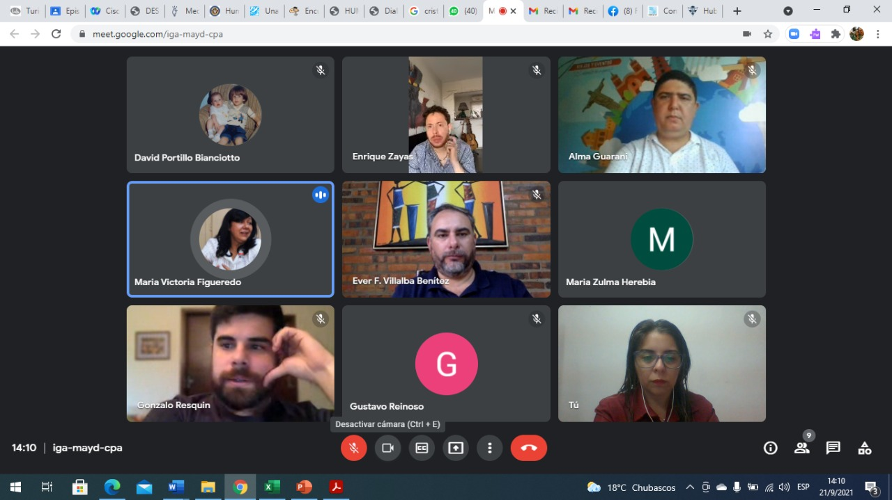

Socializan resultados de investigación que buscó potenciar las competencias digitales de emprendedores del sector turismo y cultura.

Investigadores responsables de la ejecución del Proyecto de Investigación BPINV 20-208 denominado “Fortalecimiento de competencias digitales de prestadores de servicios de la Industria cultural y el Turismo, mediante la creación de un hub de emprendimientos creativos y la aplicación de la metodología bootcamp virtual», coordinado por la Facultad de Ciencias, Tecnologías y Artes «FCTA» de la Universidad Nacional de Pilar y la Universidad Tecnológica Intercontinental, “UTIC”, cofinanciado por el CONACYT, realizaron la presentación virtual de los resultados obtenidos en el marco del desarrollo del proyecto.
El primero de los eventos tuvo lugar en el marco de la 9° Jornada anual de investigación: Encuentro de divulgación científica de la Facultad de Ciencias, Tecnologías y Artes y el otro en la mesa temática de cultura de la Secretaría Nacional de Cultura.
En estos espacios los responsables del proyecto, dieron a conocer los detalles operativos de cada una de las fases del desarrollo de las actividades contempladas en el proyecto, así como los resultados.
El proyecto tuvo por objetivo fortalecer las competencias digitales de los prestadores de servicios del sector turismo y cultura del pais, a fin de contribuir con el proceso de reactivación socio económica pos pandemia y dinamizar las iniciativas de emprendedores paraguayos en el uso de las herramientas TIC (Tecnologías de la Información y de Comunicaciones)
El proyecto ha contado con el apoyo de la Secretaría Nacional de Turismo (SENATUR), el Conservatorio Nacional de Música (CONAMU), el Conservatorio de Música Sofía Mendoza, la secretaria Departamental Cultura y Turismo de la Gobernación de Ñeembucú y la Dirección de Educación, Cultura, Turismo y Deporte de la Municipalidad de Pilar.
El proyecto, dispone de un sitio web bajo la denominación hub creativo https://www.utic.edu.py/v7/hub.creativo.utic/, en el que están disponibles, los materiales y las grabaciones de cada uno de los talleres desarrollados y pretende constituirse en una herramienta de utilidad pública con posibilidades de transferencias a otros sectores y replicabilidad.
PPT de la Socialización de Resultados Descargar
Socializan resultados de investigación
- Categoría: Noticias Destacadas
- Fecha de publicación: 21 de septiembre, 2021
Otras Noticias...
Presentación de los resultados
Investigadores responsables de la ejecución del Proyecto de Investigación BPINV 20-208 denominado “Fortalecimiento de competencias digitales de prestadores de servicios de la Industria cultural y el Turismo, mediante la creación de un hub de emprendimientos creativos y la aplicación de la metodología bootcamp virtual”, coordinado por la Universidad Tecnológica Intercontinental (UTIC) y la Facultad de Ciencias, Tecnologías y Artes de la Universidad Nacional de Pilar, realizarán la presentación de los resultados obtenidos en el marco del desarrollo de dicho proyecto.
Leer MásFERIA VIRTUAL DE EMPRENDIMIENTOS CREATIVOS
Realizan cierre del campamento virtual, donde se presentaron los emprendimientos de los participantes
Leer Más